Triton Tools
Tools Pull-Down Menu Overview
This is a breakdown of the tool pull-down menu, each sub-menu is described in greater detail in their separate sections below.
A. 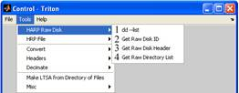 B. 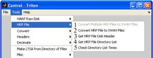
C.
D. 
E. F. 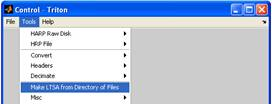
G. 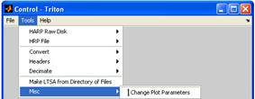
A) HARP Raw Disk
B) Raw HARP file operations
C) Convert various file formats to XWAV format
D) View and edit XWAV file headers
E) Decimate XWAV files
F) Creates new LTSA file from a directory of XWAV or WAV files, see LTSA section below for more information.
G) Manual/Auto change time series and spectral plot axes
HARP Raw Disk
1) This tool does not yet work.
2) This tool does not yet work.
3) This tool does not yet work.
4) This tool does not yet work.
Raw HARP File Operations
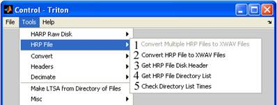
1) No Action
2) Select the *.hrp file you wish to convert.
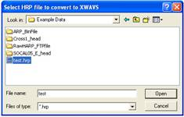
- Select the *.hdr file that corresponds to the *.hrp file
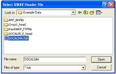
- Choose a file to save them in.
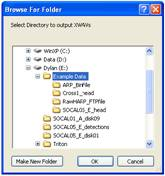
3) Gets the HRP disk file headers.
- First you must find the HRP disk to get the file header from.
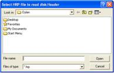
- The header information is displayed in the message window.
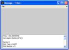
4) Gets the HRP disk file directory.
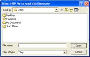
- The information is displayed on the MATLAB command window. This process takes up to a minute or two depending on file size. The 12 columns for each raw file (row) represent, file number, file name, year, month, day, hour, minute, second, millisecond, sample rate, number of sectors, and number of bytes.
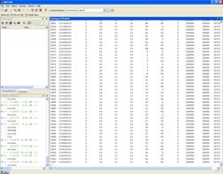
5) Checks the directory list times.
- Choose either one file or whole directory, 1 denotes 1 file while 0 is used for a whole directory.
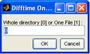
- Select the HARP head file.
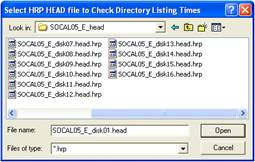
- Now you enter the sampling rate and the recording interval and duration. 0 is used for continuous recordings. Example if the HARP is recording for 5 minutes and is off for 20 than the interval would be 25, and the duration would be 5.
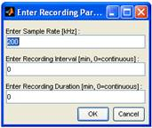
Converting Files to XWAV Format
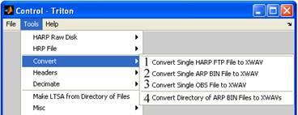
1) Converts a single HARP FTP file to an XWAV file. Use this function after off loading a raw file from a data logger e.g. during a deck or lab test.
- Type in the sampling frequency, which will be recorded in the XWAV file, and the file type; USB or FTP.
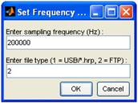
- Input the remaining statistics for the new XWAV file, the number of blocks, sample rate change factor, The number of XWAVs to make, and the Gain of the XWAV.
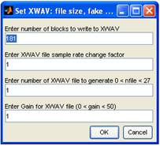
2) Converts 1 ARP BIN file to an XWAV file.
- Find the ARP file you want to convert, highlight it and click ‘Open’.
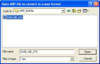
- Find the file you wish to save the ARP in and choose a name for the new XWAV file.
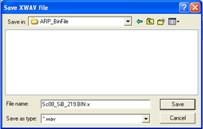
- Set the XWAV parameters, the number of blocks with which to write the XWAV, the sample rate change factor, the number of XWAV files to make, and the Gain of the XWAV.
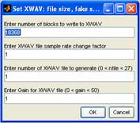
3) Converts 1 OBS file to an XWAV file.
4) Converts a directory of ARP BIN files to XWAV files.
Choose the directory you wish to convert.
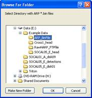
- Choose the directory in which to save the converted files, this could take a couple minutes to complete.
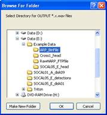
View and Edit XWAV File Headers
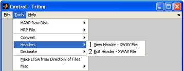
1) Allows the user to view the header of the current XWAV file open in the plot window.
- Choose the XWAV file you wish to open.
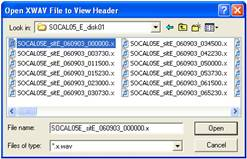
- The data is displayed in a long narrow window in the format, year, month, day, hour minute, second and millisecond.
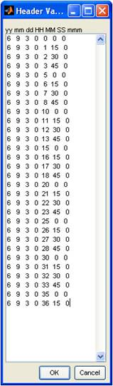
2) Allows the user to edit the header of the current XWAV file open in the plot window.
- Choose the XWAV file you wish to edit.
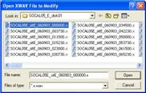
- The data is displayed in a long narrow window in the format, year, month, day, hour minute, second and millisecond, now just erase and write over the data with the new information.
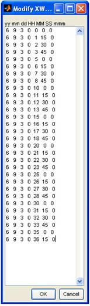
Decimate XWAV Files
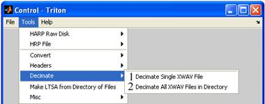
1) Decimates a single XWAV file
- Highlight the XWAV file you wish to decimate, and click ‘Open’.
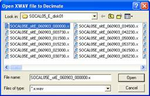
- Enter the Decimation factor (must be an integer). This is the level of decimation, for example a decimation factor of 100 would be 100 times less memory intensive than the original file.
- Name the new decimated file, and choose where to save it.
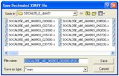
2) Decimates all XWAV files in the directory.
- Highlight the XWAV directory you wish to decimate, and click ‘Open’.
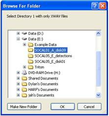
- Enter the Decimation factor (must be an integer). This is the level of decimation, for example a decimation factor of 100 would be 100 times less memory intensive than the original file.
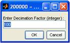
- Choose where to save the newly decimated XWAV files.
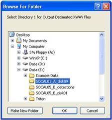
Creates New LTSA File
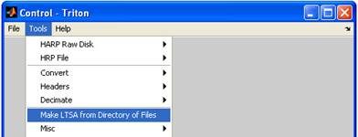
Creates new LTSA file from a directory of XWAV or WAV files, see LTSA section above for more information.
Change Plot Parameters
1) The Change Plot Parameters tool is applied to time series and spectral plots only. MATLAB’s default is to automatically scale plots. When set to manual the plot scaling is held constant to maximum and minimum values chosen by the user. The plot parameter scaling are:
- Max Amp [counts]
- Min Amp [counts]
- Enter Max SPL [dB]
- Enter Min SPL [dB]
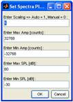